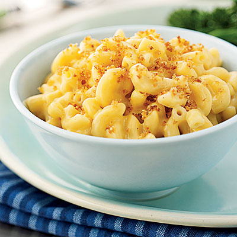

Mac & Cheese

Ingredients
Directions
- Preheat the oven to 375°F
- Drizzle oil into a large pot of boiling salted water. Add the macaroni and cook according to the directions on the package, 6 to 8 minutes. Drain well.
- Meanwhile, heat the milk in a small saucepan, but don't boil it. Melt 6 tablespoons of butter in a large (4-quart) pot and add the flour. Cook over low heat for 2 minutes, stirring with a whisk. While whisking, add the hot milk and cook for a minute or two more, until thickened and smooth. Off the heat, add the Gruyere, Cheddar, 1 tablespoon salt, pepper, and nutmeg. Add the cooked macaroni and stir well. Pour into a 3-quart baking dish.
Copyright © Kobe Martin